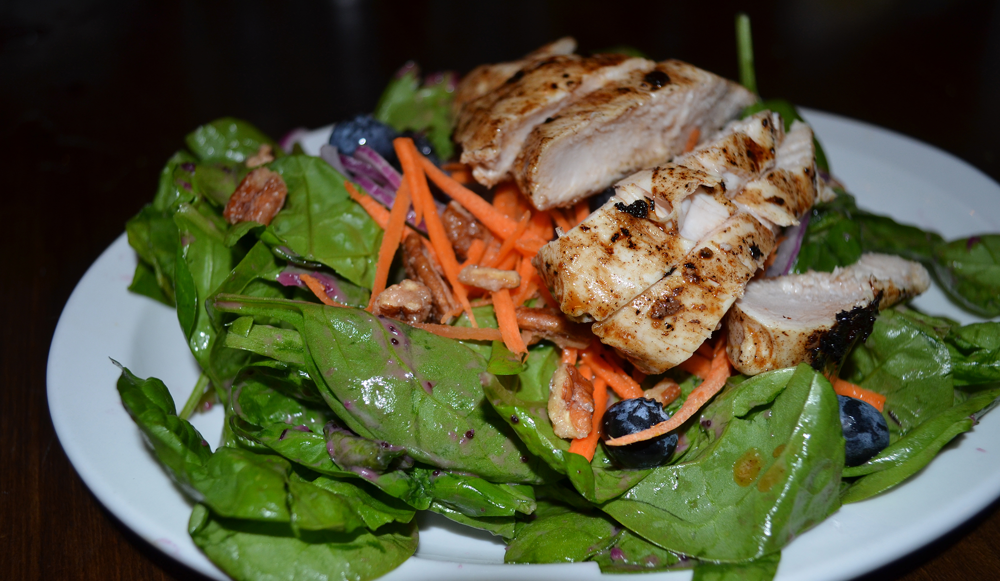
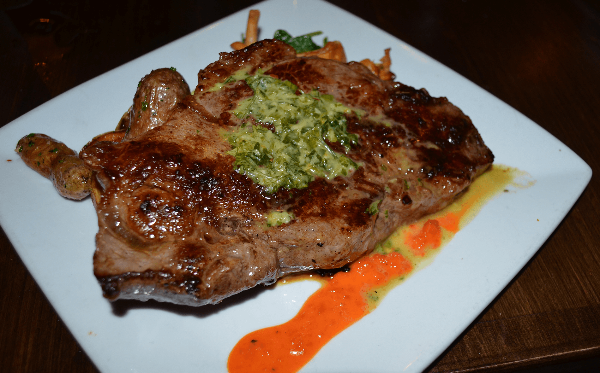
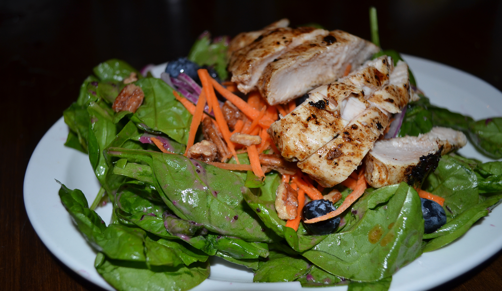
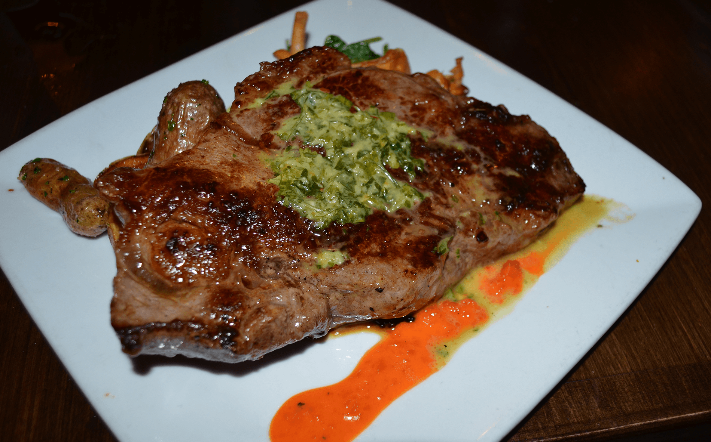

Dinner SpecialCrispy skinned maple leaf duck breast served with a mushroom, heirloom tomato, radicchio, and sweet pea ragout, basmati rice, and finished with a blueberry demi glace |
TartareSalmon with capers, red onions, lemon zest, salt & pepper, and Georgia olive oil |
Flatbread of the MomentMarinara sauce base with spinach, artichoke hearts, and parmesan cheese |
Cheese PlateTomme, smoked gouda, and montero |
Menu
Flatbread of the MomentAsk your server for today's special flatbread |
Blue Turtle Fish TacosChoose blackened or fried fish on corn and flour tortilla with Napa cabbage, cilantro lime, sour cream, and pico de gallo |
Fried Artichoke HeartsArtichoke hearts flour dusted and flash fried until crispy and served with a citrus aioli |
Beet NapoleonRed and yellow beets pickled and stacked with herbed, whipped chevre |
MusselsSautéed mussels in a coconut-curry cream sauce |
Salmon CarpaccioHouse-cured salmon, sliced thin and garnished with aged olive-oil and fried capers |
Chef's Seasonal Vegetables AntipastiAssorted marinated, grilled, roasted, or pickled seasonal vegetables. Served with crostini and herbed crema. |
Cheese PlateThree cheeses with a pairing for each. Call and ask for today's cheese selection. |
Beef PinwheelBeef and blue cheese with roasted red peppers rolled in a puff pastry and baked. Served with a rich bordelaise sauce. |
Tartare of the DayCall and ask about today’s unique and elegant creation. |
Pork BellySavannah River Farms all-natural pork belly, cured and braised. Served with onion soubis and grilled frisée. |
|
Squash Duo "Pasta"Squash and zucchini pappardelle ribbons topped with oven-roasted Roma tomatoes and ricotta salada. |
MahiBlackened mahi with sweet corn, lima bean and tomato succotash, topped with arugula pecan pesto |
Risotto of the DaySelections and prices change daily |
Pork ChopOrange-juiced brined Savannah River Farms pork chop topped with red onion marmalade and served with ratatouille. |
Pan-Seared Airline Chicken BreastSavannah River Farms chicken breast with red pepper quinoa and topped with Kachina Farms sautéed sorrel. |
N.Y. StripGrilled N.Y. Strip, bacon-fat-tossed fingerling potatoes, local AmFog roasted mushrooms and seasonal vegetables. Finished with a fresh chimichurri. |
ArugulaKachina Farms arugula tossed in Champagne vinaigrette with shaved red onion, tear-drop tomatoes and ricotta salada. |
Apple and FennelThinly-shaved apple, celery, and fennel tossed with Kachina Farms mixed greens in a lemon, honey, and thyme vinaigrette. |
Spinach SaladSpinach tossed in our poppy-seed vinaigrette with candied pecans, seasonal berries, red onion and carrots. |
|
Chicken and Wild RiceChicken soup with wild rice, fresh corn, and stewed tomatoes. |
Savory MushroomMushroom soup made with local AmFog mushrooms and a hint of white truffle oil. |
Vegetable MinestroneClean, crisp, and blanched vegetable soup with carrot, onion, celery, asparagus, teardrop tomatoes and orzo in a fresh herb broth. |
BorschtBorscht made with red beets. Served warm or cold with quenelle of crème fraîche. |
Chicken Salad WrapChicken, blue cheese, orange zest and tarragon chicken salad with mixed greens and tomatoes in a spinach wrap. |
Tuna WrapSeared ahi tuna wrapped around Kachina Farms mixed greens, carrots, red onions, and sprouts tossed with a cilantro aioli. |
Shrimp SaladShrimp salad with red onion, cilantro and lime juice. Wrapped in a sundried tomato tortilla with mixed greens and tomatoes. |
Veggie WrapHummus, roasted red pepper, black olive, spinach, and sprouts wrapped in a spinach tortilla. |
BBQ Tofu SlidersCrispy fried tofu with house-made bbq sauce and pickles on two slider buns. |
Turkey WrapSliced turkey, bacon, mozzarella, tomato, red onion and red pepper coulis wrapped in a flour tortilla. |
Blue Turtle SlidersTwo mini burgers with sautée onions, house-made dill pickles, and cheddar cheese. |
|
Beef SliderServed with cheddar cheese and a side of fresh fruit. |
Chicken TendersHand breaded and deep fried chicken tenders, served with fresh fruit. |
Mac n' CheeseHomemade macaroni and cheese, served with a side of seasonal fresh fruit. |
|
Bar
Wine
La Posta |
Cocina |
Blend |
Los Vascos |
Cannonball |
Petite Petite |
Finca La |
Linda |
Casa Silva |
Raymond |
Reserve |
Arrogant Frog Lily Pad Noir |
Block Nine |
Ventisquero |
Jean-Jacques Girard Bourgogne |
Santa Julia Organic |
William Hill |
7 Falls |
Hook and Ladder |
Les Jamelles |
Nobilo |
Whitehaven |
Riff |
Tangent |
Foris Pinot Gris |
Aveleda Fonte |
Vinho Verde |
Portugal Acrobat |
Rose of Pinot Noir |
Oregon Conundrum |
Beer
Yuengling |
Michelob Ultra |
Bud Light |
Miller Light |
Craft |
Sweetwater LowRYEder IPA |
Terrapin Hopsecutioner IPA |
Allagash White |
Left Hand Nitro Milk Stout |
21st Amendment Back to Black IPA |
Crispin Original Cider |
Red Hare Long Day Lagar |
Southbound Sun Belgian Wit |
Angry Orchard Crisp Apple |
RJ Rockers Fish Paralyzer |
Imports |
Stella Artois |
Orion Rice Lager |
Caguama Latin Pilsner |
Pilsner Urquell |
Catering
Please contact us to so we can discuss your catered event. Almost anything is possible! There is a minimum of 10 people per Catering Order. We require at least a 24 hour notice on most orders. Delivery is available within the immediate Savannah area.
Contact Alisha at 912-358-0808, or email at info@blueturtlesavannah.com